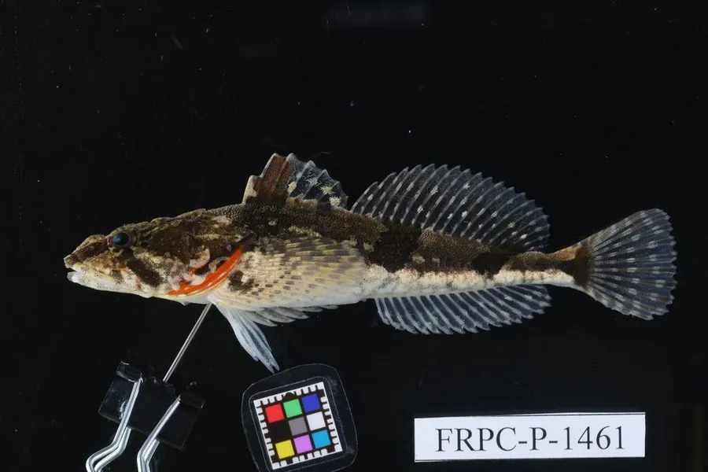

鱼类 · 动物界
松江鲈 Trachidermus fasciatus

中国东南沿海与长江口的降海洄游小型鱼类，鳃盖膜上有两条橙色条纹似四鳃，肉嫩味鲜被誉为江南名鱼，野生资源已很稀少。
- 分类
- 门脊索动物门纲硬骨鱼纲目鲉形目科杜父鱼科属松江鲈属
- 栖息环境
- 淡水河湖、河口咸淡水交汇区与沿海浅水，喜石缝与水草间隐蔽
- 地理分布
- 中国黄渤海与东海沿岸、长江口、钱塘江口及鸭绿江口一带
- 保护级别
- IUCN 数据缺乏（DD）；中国国家二级保护动物
物种志
松江鲈体长一般 10–20 厘米，体重 50–150 克。体形前部平扁、后部侧扁，头大而宽扁，吻部钝圆，口大，上颌略长；体表无鳞，皮肤粗糙，散布细小的皮刺。体色灰褐至黄褐，体侧有 4–6 条深色横带，鳃盖膜上有两条醒目的橙红色纵纹，看上去像多了一对鳃，故有“四鳃鲈”之称。胸鳍宽大呈扇形，尾鳍圆形。
它们分布于中国黄海、渤海与东海沿岸及长江口、钱塘江口，是降海洄游鱼类：成鱼在淡水的河湖中生活，每年 11 月至次年 1 月顺流而下到河口浅海产卵，幼鱼孵化后溯河进入淡水育肥。食性以虾、蟹、小鱼为主，多隐蔽在石缝、水草间伏击。松江鲈自古被视为江南名鱼，肉质细嫩、无腥味。由于河口水域污染、闸坝阻隔与过度捕捞，其野生资源急剧减少，现为中国国家二级保护动物，并已开展人工繁育与增殖放流。
形态与习性
- 体长约 10–20 cm，体重 50–150 g
- 食性虾、蟹与小鱼，多隐蔽伏击
- 洄游11 月至次年 1 月降海到河口浅海产卵，幼鱼溯河育肥
- 识别特征鳃盖膜上有两条橙红纵纹，看似“四鳃”
- 体表无鳞，皮肤粗糙并散布细小皮刺
- 种群现状野生资源急剧减少，依赖人工繁育与增殖放流
- 寿命通常仅 1–2 年
趣味知识
- 松江鲈鳃盖上有两道橙红条纹，看上去像长了四个鳃，因而又叫四鳃鲈。
- 它秋天顺流下海产卵，幼鱼再逆流回到淡水里长大。
- 自古“松江鲈鱼”被视为江南美味，如今野生个体已十分稀少。